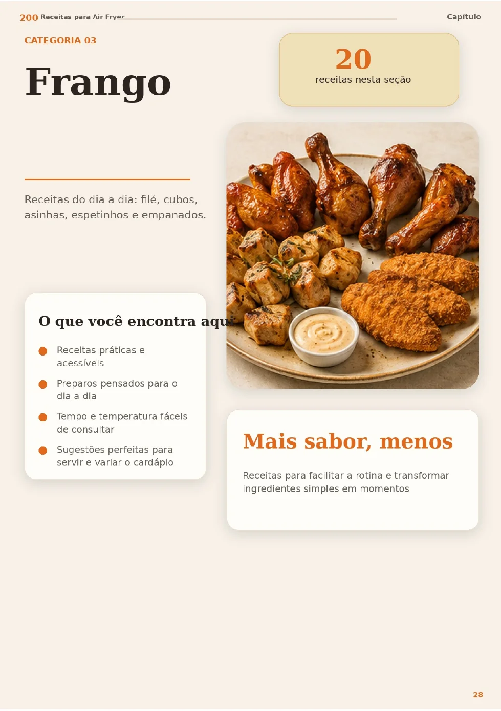

Carne acebolada
Arroz + legumes
30 min · 4 porçõesTerça-feira · 15 de setembro
O que você precisa resolver na cozinha hoje?
Uma refeição simples para 4 pessoas, pronta em aproximadamente 35 minutos.

Sua semana
Arroz + legumes
30 min · 4 porçõesBatatas + salada
25 min · 4 porçõesNoite prática
20 min · 4 porçõesPlanejador inteligente
Este preview simula a experiência. Depois conectamos IA, login e banco de dados.
Receitas
Explore a biblioteca ou diga o que já existe na sua cozinha.
Separe os ingredientes por vírgulas.
Air Fryer · fácil
Uma opção rápida para almoço ou jantar, com poucos ingredientes.
Econômica · fácil
Crocantes por fora e macias por dentro, com recheio adaptável.
Lanche · rápido
Uma solução simples para aproveitar ingredientes que já estão na geladeira.
Lista inteligente
Gerada a partir do cardápio. Neste preview, os dados ficam apenas no navegador.